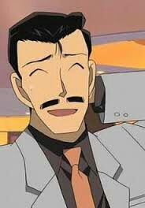
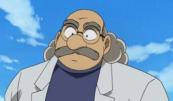
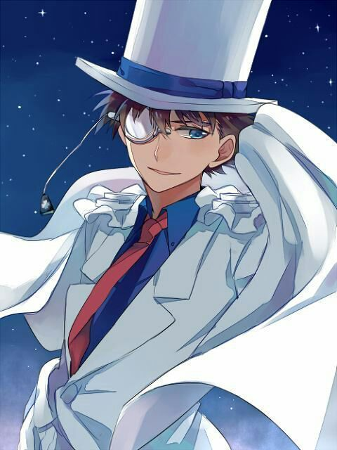

Thám tử lừng danh Conan

| Thể loại | Shonen, Trinh Thám, Hài hước |
| Độ tuổi | 13+ |
| Tác Giả | Aoyama Gosho |
| Số tập | 97+ |
| Tình trạng | Đang sáng tác |
| NXB Nhật Bản | Shonen Sunday |
| NXB Việt Nam | Kim Đồng |
Giới thiệu
Thám Tử Lừng Danh Conan (Tiếng Nhật: 名探偵コナン, Romaji: Meitantei konan) là một bộ truyện tranh Nhật Bản thuộc loại trinh thám được vẽ và minh họa bởi Aoyama Gosho . Bộ truyện này ban đầu là những chương truyện nhỏ được đăng trên tuần báo Shōnen Sunday của Shogakukan từ 19 tháng 1 năm 1994 sau đó được đóng thành các tập tankōbon.
Tóm tắt nội dung
Kudo Shinichi là một thám tử trung học rất nổi tiếng, thường xuyên giúp cảnh sát phá giải các vụ án khó khăn. Trong một lần khi đang điều tra, cậu bị thành viên của Tổ chức Áo đen phát hiện. Chúng ép cậu uống thử loại thuốc teo nhỏ (APTX 4869) tổ chức vừa điều chế ra nhưng chất độc này không giết chết cậu mà khiến cơ thể cậu teo nhỏ thành hình dạng một đứa trẻ. Sau đó, cậu đổi tên thành Edogawa Conan sống tại nhà thám tử Mori Kogoro. Xuyên suốt xê-ri cậu âm thầm hỗ trợ phá các vụ án bên cạnh ông Mori. Đồng thời cậu cũng phải đi học lại tiểu học, kết bạn được nhiều người và lập ra Đội thám tử nhí.
Về sau một học sinh tiểu học bất đắc dĩ khác tên là Haibara Ai tiết lộ rằng cô ấy chính là người đã tạo ra thuốc teo nhỏ, vì muốn tách khỏi Tổ chức nên đã uống loại thuốc độc APTX4869 ( cùng loại thuốc mà Conan bị ép uống ) và cơ thể cũng bị teo nhỏ như Conan. Trong một vài vụ án liên quan đến Tổ chức Áo đen, Conan đã hỗ trợ các điệp viên của FBI và CIA. Mới đây tác giả Aoyama đã tiết lộ một thông tin gây chấn động khi công bố ông trùm của tổ chức áo đen trong tập 95 đã được ra mắt ở Nhật. Thông tin này đã gây chấn động cho fan của bộ truyện tranh này khi bấy lâu nay họ vẫn nghĩ ông trùm là người thân mật với Conan.
Nhân vật chính
-
Kudo Shinichi
Một thám tử học cấp III. Sau khi bám theo người của Tổ chức Áo đen tại công viên trong lần đi chơi với Mori Ran, cậu đã bị phát hiện và bị chúng đánh gục. Trong lúc còn bất tỉnh, Shinichi bị một thành viên của Tổ chức là Gin ép uống thuốc độc APTX 4869 nhằm thủ tiêu cậu để bịt đầu mối. Thế nhưng, cậu không chết mà lại bị teo nhỏ thành một cậu bé cấp 1. Shinichi liền tới nhà của tiến sĩ Agasa Hiroshi để tìm sự giúp đỡ và từ đây, cậu bắt đầu sống với thân phận mới là Edogawa Conan. Cái tên "Shinichi" có nghĩa là "Sự thật chỉ có một".
-
Edogawa Conan

Thân phận mới của Kudo Shinichi sau khi bị uống thuốc APTX-4869 và teo nhỏ. Với sự giúp đỡ của tiến sĩ Agasa, Conan đã nhập học vào lớp 1B, trường Tiểu học Teitan. Conan cùng với ba người bạn học cùng lớp là Ayumi, Genta và Mitsuhiko (sau này có thêm Haibara) đã lập nên "Đội thám tử nhí", chuyên nhận các yêu cầu từ những bạn học khác. Cậu hiện đang sống với Mori Ran và bố của cô, Mori Kogoro.
-
Mori Ran
Bạn thân nhất của Shinichi từ thuở nhỏ. Cô rất giỏi võ thuật và là đội trưởng của đội karate trường Cao trung Teitan. Ran thường cố gắng đưa bố mẹ mình trở lại với nhau dù không mấy thành công cho lắm, khi hai người đã ly thân lúc cô được 6 tuổi. Đôi lúc Ran cảm thấy Conan rất giống với Shinichi ở nhiều điểm và còn nghi ngờ Conan chính là Shinichi. Những lúc đó, Conan sẽ tìm ra cách để ứng biến và che mắt Ran. Tên của Ran được lấy cảm hứng từ tên của Maurice Leblanc, tác giả người Pháp, người đã tạo ra nhân vật Arsène Lupin.
-
Mori Kogoro
Bố của Ran. Ông là một sĩ quan cảnh sát đã rời ngành và hiện là một thám tử tư. Ông kết hôn với Kisaki Eri, một luật sư thành đạt và xinh đẹp nhưng hiện đang ly thân. Mori là người thích hưởng thụ, ưa phụ nữ đẹp và muốn mọi người phải chú ý tới và ngưỡng mộ mình. Đây cũng là lý do dẫn đến việc ông và vợ phải ly thân. Mặc dù có lối sống vô trách nhiệm, ông vẫn rất quan tâm đến con gái mình, đôi khi còn thể hiện danh dự và đạo đức nghiêm khắc. Sau vô số lần phá án có sự giúp đỡ bí mật của Conan, danh tiếng của Mori đã tăng lên nhanh chóng và ông đã nhận được nhiều lời mời hơn. Ông thường không thể nhớ chi tiết các vụ án vì bị Conan đánh mê và giải quyết vụ án, lấy Mori như một vỏ bọc. Tuy thế, đôi khi ông vẫn tự giải quyết được vụ án mà không cần đến sự trợ giúp của Conan. Mori cũng được biết đến là một người giỏi Judo khi còn đi học.
-
Agasa Hiroshi
Ông tiến sĩ hàng xóm của Shinichi. Ông là một thiên tài sáng chế, đã tạo ra rất nhiều phát minh giúp cho Shinichi thích ứng được với thân hình bị teo nhỏ. Agasa cũng là một người bạn tốt của gia đình Kudo và nhóm thám tử nhí.
-
Haibara Ai
Bí danh trong tổ chức Áo Đen là Sherry (シェリー?), tên thật là Miyano Shiho (宮野志保 (Cung Dã Chí Bảo)?). Cô từng là một thành viên của Tổ chức Áo đen. Cô bị cấp trên lừa chế tạo loại thuốc độc APTX-4869. Sau khi Tổ Chức sát hại chị gái cô là Akemi, Sherry đã nhiều lần hỏi chúng nhưng chỉ nhận được sự yên lặng. Cuối cùng, cô tìm cách trốn khỏi Tổ chức nhưng bị phát hiện và nhốt vào hầm tối chờ ngày thủ tiêu. Rơi vào đường cùng, cô nuốt viên thuốc được giấu trong người với ý định tự sát nhưng lại bị teo nhỏ. Trốn thoát khỏi Tổ chức dưới hình dạng một bé gái, cô đã được tiến sĩ Agasa nhận nuôi, đặt cho cái tên "Haibara Ai" và trở thành bạn của Edogawa Conan cùng các thành viên của đội thám tử nhí. Kể từ đó Haibara luôn lo sợ rằng Tổ chức Áo đen sẽ tìm thấy và giết mình, nhưng Conan luôn có mặt và bảo vệ cô.
-
Siêu trộm Kid
Tên thật là Kaitou Kuroba, sinh ngày 21 tháng 6 (cùng ngày với tác giả). Đây là một nhân vật sở hữu khả năng biểu diễn ảo thuật xuất chúng, có biệt danh "Kid" hay "1412" (tên do Kudo Yusaku đặt cho), trở nên nổi tiếng với hơn 100 vụ trộm cắp những món đồ quý giá và là siêu trộm bị truy nã toàn cầu. Anh có biệt tài trong việc cải trang, thay đổi giọng nói và không bao giờ để lại dấu vết gì trong các vụ trộm và có khả năng suy luận. Kid có một mục tiêu lớn là truy đuổi một tổ chức bí ẩn đã giết cha mình, và tất cả các vụ trộm anh đã thực hiện từ trước tới nay cũng chỉ là vì lý do đó.